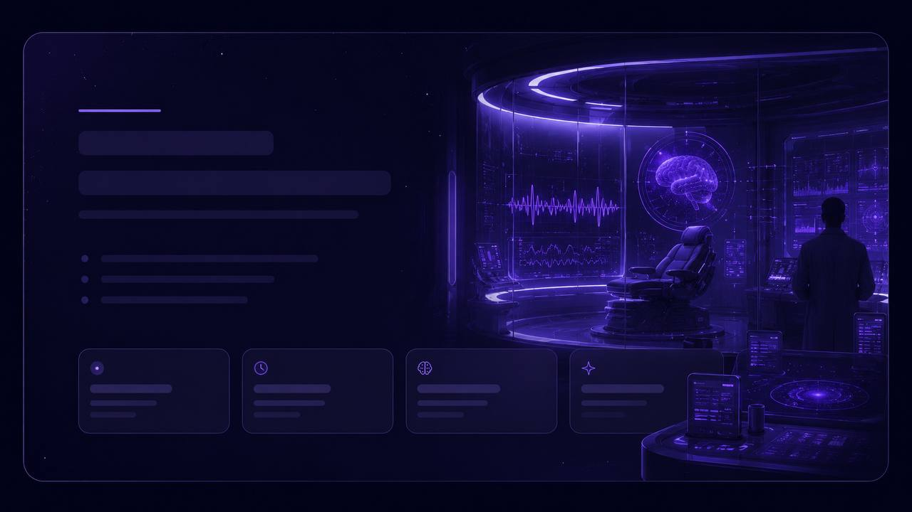
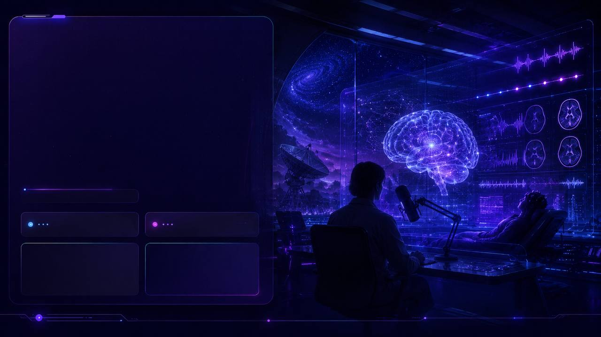
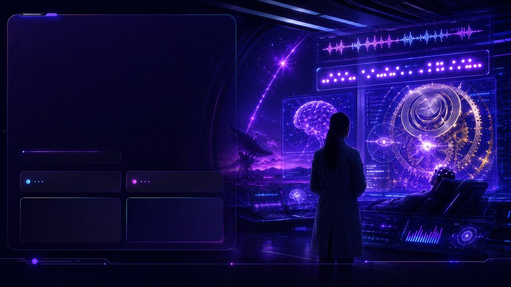

Dr Naomi Reyes runs a neuro lab inside the SETI building. Her newest case: a patient who can only blink. Her newest puzzle: his EEG traces are repeating a pattern she has seen before — twice.
↩ L1 callback · watchmaker↩ L2 callback · Proxima signal
Level
B2 / B2+
Duration
~60 minutes
Skills
Reading · Listening · Speaking · UoE · Writing
Story arc
Episode 3 of 4
Previously in the series
L1 · Watchmaker (1995). An old clockmaker fixes a watch for a stranger named Theo Marshall. His granddaughter Mia is beside him. That night he writes about the visitor in the family logbook: "Mind is still wound."
L2 · Are we alone? Twenty years on. Mia is at SETI Atacama; her senior, Dr Naomi Reyes, reads a broadcast from Proxima that repeats the clockmaker's rhythm — three short, two long, every nineteen seconds.
Now · L3 · Whose mind? Naomi has crossed the corridor from SETI to neurology. Her newest patient, locked-in for three years, is blinking on that same nineteen-second beat. Eleven weeks in, the strip begins to spell the watchmaker's line — and Naomi has just recognised who is in the bed.
01
Warm-up · the question Naomi can't put down
Last episode you decoded the SETI signal from Proxima Centauri. This episode opens on Earth — but the puzzle is just as alien.
L1 echo
Recap from L1: the watchmaker's logbook ended with the phrase "wound the wrong way for a very long time." Keep that line in mind. It will come back today — but not from a clock.
Before we open the case file
Answer these out loud (30 seconds each, no perfect grammar):
If you couldn't speak or move, only blink — how would you tell the world your name?
Is a brain that thinks but cannot act still a mind?
Can a person be "wound the wrong way"? What might that mean for someone other than a watchmaker?
Teacher prep notes
Q1 — let Ivan be playful. He may invent an alphabet. Note any modal use (would, could, might) for later UoE.
Q2 — early reading hook. Whatever he says, ask "Why?" once. Don't correct.
Q3 — connects directly to the final reveal. Note his answer; we'll return to it in Section 8.
02
Vocab · 14 words from the case file
Tap a card to flip. Add what you want to remember — they will surface again across reading, listening, and speaking.
Teacher prep notes
14 words at B1+/B2 — school olympiad range (C1 abstractions qualia / cognition / sentient / benchmark / harness / deduce / anomalous / threshold have been swapped out).
"to wind / wound" — L1 echo, the series key verb. Drill both pronunciations /waɪnd/ → /waʊnd/, do not confuse with wound-injury.
"awareness / aware" — same root. On Word Formation the student can easily derive unaware.
03
Reading · Case file 03/Marshall

Case file · 03 / Marshall
Yes is one blink. No is two.
Did you know?
◉ · brain file
86 billion
neurons in one human brain — more than there are stars in the Milky Way.
20% of your body's daily energy runs here — day and night.
Every neuron reaches an average of 7 000 others; the total wiring is larger than the internet.
In locked-in syndrome, the eyelid is often the very last muscle still under conscious control.
Case file · 03/Marshall · Reyes Lab
Patient: Marshall, Theodore J. · 58 · admitted after cerebellar stroke, March. Status:complete motor paralysis except eyelids. Conscious, responsive. Communicates exclusively by blinking. Profession (pre-stroke): theoretical physicist · amateur clockmaker.
I have been Dr Reyes' assistant for eleven weeks. I have watched her sit by Theo's bed for an hour at a time, asking yes/no questions. Yes is one blink. No is two. Sometimes she asks nothing, and just watches the EEG monitor.
The monitor has been showing something unusual. A short pattern of brain activity — three quick bursts, then a long pause, then two slow ones — repeating every nineteen seconds. It does not reflect any standard motor or sensory rhythm. Theo's neurologist called it "meaningless noise."
Dr Reyes does not think it is noise. She thinks Theo is using his last living muscle group — the muscles that move his eyes and lids — to figure something out. Counting. Spelling. Sending.
"He is wound, but he is wound the wrong way for a very long time. We are reading his clock from the front of the case. We need to open it from the back."
— from Dr Reyes' lab notebook, entry 11.06
Yesterday she opened a drawer at his bedside. Inside: a leather-bound notebook. Theo's handwriting — pre-stroke. Most pages were physics. One page was underlined three times. It read:
"Time, like a spring, can be wound the wrong way for a very long time before anyone notices."
Dr Reyes read it twice. Then she came back to my desk and said, very quietly: "He has been trying to tell us since March."
Q · True / False / Not Given
1
Theo can move his eyes and eyelids but nothing else.
2
The neurologist agrees with Dr Reyes that the pattern carries meaning.
3
The repeating burst pattern matches a known motor rhythm.
4
Theo was a professional watchmaker before the stroke.
5
Dr Reyes thinks Theo has been signalling on purpose since March.
6
The narrator has worked with Dr Reyes for over a year.
Keys · True / False / Not Given
True — "complete motor paralysis except eyelids".
False — the neurologist called it "meaningless noise", Dr Reyes disagrees.
False — the passage says it "does not reflect any standard motor or sensory rhythm".
False — the drawer notebook is full of physics, not watchmaking manuals.
True — "He has been trying to tell us since March."
False — the narrator has been Dr Reyes' assistant for eleven weeks only.
04
Listening · podcast on the hard problem

Studio · Neuroethics Tonight
Two researchers on air
Did you know?
◐ · on air
"The hard problem"
— philosopher David Chalmers coined the phrase in 1995 for why experience feels like anything at all.
An fMRI can show whether a brain is "on" — but no scan yet tells us what a thought feels like.
Some patients thought to be unresponsive can play tennis in their head — and the scanner sees it.
Your ear catches a sound about 200 ms before you consciously "hear" it.
A 3-minute fragment from "Neuroethics Tonight." Two researchers debate whether brain activity is enough to define a mind.
Host: Welcome back. With me — Dr Naomi Reyes of the SETI–Neuro Lab. Naomi, you've started saying that the "hard problem of consciousness" might be the wrong question. Why?
Reyes: Because for forty years we have asked: why does brain activity feel like anything at all? That's a beautiful question. But it assumes the brain is the only place where the answer can come from.
Host: You're suggesting consciousness doesn't have to ride on biology.
Reyes: I'm suggesting we don't know. We've never had a clean standard — until now we couldn't even check whether a paralysed patient was conscious. Now we can. And what we're finding is that the limit is far lower than we expected. Some patients we wrote off years ago — they were there. The whole time.
Host: That has implications beyond medicine.
Reyes: Of course. If sentience can be hidden inside a body that doesn't move, why couldn't it be hidden in a signal that doesn't seem to mean anything?
Host: You're talking about the Proxima paper, aren't you.
Reyes: I'm talking about not writing things off as noise. That's all.
Q · Multiple choice
1
Why does Dr Reyes call the "hard problem" the wrong question?
2
What does she say has changed recently in clinical practice?
3
What does she imply about patients written off years ago?
4
The host's final question connects her work to —
Keys · Listening MCQ
1 — b · 2 — c · 3 — b · 4 — a. All confirmable from the transcript above once revealed.
L2 echo
Recap from L2: the team decoded a faint repeating pattern from Proxima Centauri. Naomi was named on the letter as a reviewer. She is the same person whose lab you just read about. The two stories were always one story.
05
Multiple choice · reading for the main idea
Six short paragraphs from a popular-science article on consciousness research. Pick the option that best answers the question — one right answer per paragraph. A different reading format from Lesson 4.
P1. In locked-in syndrome the eyelid does almost all the work the rest of the body cannot. A single eyelid lift can confirm a name. Two lifts can deny one. From those two answers, a competent listener can pull out an entire life — but only if the listener is willing to sit and ask.
P2. For decades we had no standard against which to measure who was "in" and who was "out." A patient who did not respond was assumed not to be there. The arrival of fMRI command paradigms changed that. Suddenly there was a measurable threshold — and it turned out the threshold was being crossed by people we'd written off.
P3. Clinical history has a habit of calling unfamiliar signals "noise." It is the cheapest possible label and the most expensive possible mistake. The signal Dr Reyes is tracking in her current patient was on the monitor for eleven weeks before anyone looked twice.
P4. The Reyes Lab and the SETI Signal Group share a building, a coffee machine, and one corridor. They did not share data — until this spring. A pattern visible in a single hospital bed and a pattern visible from four light-years away are now being compared side by side. It is too early to say whether they overlap.
P5. One affirmative blink, by itself, is data. Forty-eight in a structured sequence is a sentence. Dr Reyes' team logs every blink, time-stamped, against the EEG record. Random sequences cancel out. Real intention starts to lift off the page.
P6. Before any of this becomes therapy, ethics asks a harder question. If a patient can communicate but did not ask to be heard, are we entering their mind without invitation? The answer Dr Reyes gives is short: "You don't break into a locked room. You wait until they open the door."
1 · P1. According to the paragraph, from just two eyelid answers a competent listener can:
2 · P2. Before fMRI command paradigms, patients who did not respond were usually assumed to be:
3 · P3. The author's view of calling an unfamiliar signal "noise" is that it is:
4 · P4. What is new this spring in the relationship between the Reyes Lab and the SETI Signal Group?
5 · P5. A single affirmative blink, by itself, is described as:
6 · P6. Dr Reyes' ethical position is best summarised as:
Keys
1 — b · 2 — c · 3 — b · 4 — b · 5 — b · 6 — b
06
Speaking — pick the format
British Council IELTS format. 1 minute prep · 1–2 minute monologue · 1 minute follow-up.
Describe a time you struggled to make yourself understood
You should say:
what the situation was
who you were trying to communicate with
what got in the way (a language, an illness, technology, distance)
and explain what finally worked — or what you wish had worked.
0:00
Model phrases (B2+ pivots)
Real all-Russian olympiad oral format (regional / final stage). 3 min prep · 2 min monologue · 2 min dialogue with the teacher.
Topic — defend your position
A machine that can pass every conversation test is conscious.
Your monologue must contain:
a clear position (agree / disagree / partly)
two reasons with one concrete example each
one objection you anticipate, and your response to it
a closing sentence connecting back to today's reading or listening
0:00
Model phrases — high-control argumentation
06+
Speech tracker · check your pace
Right after your monologue (IELTS or olympiad), press the mic and re-deliver it. The tracker counts your words and gives WPM with a verdict against B2+ targets.
Task · 2-min olympiad re-take
Topic."If a person can only blink, can we still say we know what they think?"
10-second plan. Take a position → give two reasons → add one example (Theo, from Sections 3–5) → close with an inversion ("Not once did they hear his voice — yet…").
Then press the mic below and speak for two minutes without breaks. The tracker will count your words and give the WPM against the B2+ target (120–160).
SPEAK
🎙 Mission · Three questions, your voice on record
Goal: 60–90 seconds per answer · target 130–160 words per minute · use the vocab cards from this lesson. Click 🔊 Listen to hear the question, then 🎙 Record and speak. WPM and transcript appear automatically.
Q1
Theo's body has not moved in three years, yet Naomi's data shows his mind is still wound. Who, in your view, should now have the right to speak for Theo — his wife, his doctors, his lawyer, or no one at all — and why?
Speak now (60–90 s): who · why them · one objection from the other side · how you would limit their authority.
— ready —
Q2
Suppose a clinic offered you a chip that could read one other person's mind — but only one — for sixty seconds, once in your life. Whose mind would you read, and would you tell them you had been inside?
Speak now (60–90 s): who · what you most want to learn · whether you would confess · what you fear they would do.
— ready —
Q3
Naomi can release her findings tomorrow morning to the world's press, or wait six months for peer review while Theo lies in his bed. Which path would you choose for her, and which one principle do you put first — speed, certainty, or Theo himself?
Speak now (60–90 s): the path · the principle · the cost you accept · what would change your mind.
— ready —
CHALLENGE A · Devil's advocate
Now take the opposite position to your own answer in Q1 — and defend it as if you believed it. Sixty seconds.
Use these five vocab cards at least once each: consciousness · witness · override · consent · evidence.
Speak now (60 s): opposite stance · two reasons for it · concede where your old position was right · finish with one sentence that begins «In fact, …».
— ready —
CHALLENGE B · The press conference
You are Naomi. Ninety minutes before the press conference, you record a ninety-second opening statement. Ninety seconds.
Grammar gate (at least one of each): reported speech («Theo had said that…»), perfect modal («we should have noticed…»), emphatic inversion («Never had we…»).
Speak now (90 s) — four beats: what happened · what is scientifically certain · what it means for Theo as a person · what you ask of the room.
— ready —
Q1 — Who speaks for Theo.
For the moment I'd give that right to his wife — but with a strict guard-rail. She knew him before the accident, she has watched him for three years, and she has nothing to gain that he himself wouldn't have wanted. The doctors can authenticate the signal, but only she can authenticate the man. My limit: any decision that is final — turning off support, releasing his name, agreeing to surgery — has to be co-signed by an independent ethics panel. One objection I hear is that grief makes families unreliable narrators; my answer is that strangers in white coats make even worse ones, because they have a method but no memory of who the patient was.
Q2 — One mind for sixty seconds.
I think I would read my mother's mind, not when she is alive, but on the last evening before I leave home for good. Sixty seconds — that's enough for one feeling and one sentence. What I would want to learn is not her secret but her version of me: how she actually sees the daughter she is letting go of. Would I tell her afterwards? No. I'd carry it. To confess would shift the weight onto her, and the entire point of the chip would have been a private correction of my own picture, not a renegotiation of hers.
Q3 — Release now, or wait six months.
I would choose to wait, but only on one condition — that Theo himself, through the channel we have, is asked. The principle I put first is Theo, not speed and not certainty. Speed buys reputation for Naomi but exposes him to a circus he can't refuse; certainty serves science but treats him as a data point. If Theo blinks "go", we go on Monday. If he blinks "wait", we wait, even if it costs the discovery. What would change my mind: if a slower rival lab were about to publish first — then publication protects him, because it puts his name on his own evidence.
CHALLENGE A — Devil's advocate (opposite to Q1).
Suppose I argued the opposite — that no one, not even the wife, should have the right to speak for Theo. My first reason is consciousness: we now have evidence that he is awake, so a witness is no longer needed; he is his own witness. My second reason is consent: every signature she gives in his name is a small override of a man we have just learned can still think. Where my old position was right is the panic argument — Theo cannot file his own paperwork tomorrow, and somebody has to. In fact, my real conclusion is narrower than either side: she signs only what cannot wait, and everything else waits for him.
CHALLENGE B — Naomi's ninety seconds.
Ladies and gentlemen — three years ago Theo Marshall stopped answering us. Two months ago, I told my team that I had seen a pattern in his EEG that I could not explain. Today I can. Theo had said, in a paper he wrote before the accident, that he wanted his data released the moment the data spoke. The data has spoken. We should have caught the signal earlier — eleven weeks earlier, to be precise — and that delay is on this lab. Never had any of us seen a sentence assembled this slowly, one blink at a time, by a man we had assumed silent. The sentence is short: "Mind is still wound." I am not here to ask you to celebrate. I am here to ask you to be patient — with Theo, with the science, and with the family that has carried this longer than any of us.
💡 B2+ pace target: 130–160 wpm. Below 100 is too slow. Above 180 you start dropping endings. The transcript under each answer is what the mic actually caught — if it shows "…" instead of a word, that's exactly where your delivery blurred.
07
Use of English · decoding Theo's last message
Naomi's team finally extracted a five-word sentence from eleven weeks of blinks. They asked her to fact-check the English before publication. Help her finish the proof.
7.1 · Cloze · Reyes' lab note
If the pattern (__1__) really intentional, then for nearly three months Theo (__2__) telling us, again and again, that his mind was still wound. The team's first __3__ was disbelief; the second was anger that we (__4__) caught it sooner. I keep thinking of the watchmaker his father (__5__) — and of his own line about a spring that is wound the wrong way for a very long time before anyone notices.
1
2
3
4
5
7.2 · Open cloze · the press release
Type one word per gap.
1
The Reyes Lab has confirmed a paralysed patient produced an intentional EEG signal.
2
It is the first time a signal has been mapped to a complete English sentence.
3
The team relied a blink-timed protocol developed in-house.
4
Had the monitor been switched off at night, the pattern never have been spotted.
5
The patient himself has asked to remain until further notice.
7.3 · The decoded strip · read aloud

Week 11 · the strip
Three short. Two long. One letter at a time.
Did you know?
·−· · code
1836
the year Samuel Morse designed his code — dots for short taps, dashes for long ones, one letter at a time.
Fastest hand-key operator on record: ~55 wpm — faster than most people type.
SOS (· · · − − − · · ·) was chosen not for meaning but as the shortest unmistakable signal.
Nearly two centuries later, the same code still works with one muscle — the eyelid.
After eleven weeks of three short bursts and two long ones, decoded one letter at a time, this is what Theo had been sending.
"Wound the wrong way for a very long time" — the line from the watchmaker's logbook in L1 was Theo's line all along. He wrote it years ago; the watchmaker character was built on him. Naomi's discovery was that the mainspring of his mind, like the spring of a clock, was still alive. Still wound.
Keys · Use of English (7.1 + 7.2)
7.1 · Cloze: 1 — is · 2 — has been · 3 — response · 4 — hadn't · 5 — had been.
7.2 · Open cloze: 1 — that · 2 — such · 3 — on · 4 — would · 5 — anonymous.
08
Word Formation · the case of Theo Marshall
Use the word in CAPITALS at the end of each line to form a word that fits the gap. Olympiad format (MCK / EGE).
1
The Marshall case changed the way doctors think about (CONSCIOUS).
2
When Naomi first made her claim, her colleagues' reaction was complete (BELIEVE).
3
The new protocol relies on the of tiny shifts in the EEG (DETECT).
4
Dr Reyes was remarkably in defending her interpretation (PERSIST).
5
The family asked for a clear of what had been found (EXPLAIN).
6
Mind, in this view, is closer to a process than to a fixed of the brain (POSSESS).
Rewrite each sentence so it keeps the same meaning, using 2 – 5 words including the key word in CAPITALS. Olympiad / EGE format.
1
People said Theo could no longer think. BELIEVED: Theo no longer be able to think.
2
«I will publish next week,» Dr Reyes said. ANNOUNCED: Dr Reyes publish the following week.
3
It is not necessary for Naomi to inform the press. NEED: Naomi inform the press.
4
If we had asked the right question, we would have caught the signal earlier. HAD: the right question, we would have caught the signal earlier.
5
The team realised Theo was conscious only after eleven weeks. ONLY: Only after eleven weeks that Theo was conscious.
6
She regrets not having told her team sooner. WISHES: She her team sooner.
Keys
1. was believed to · 2. announced that she would · 3. does not need to · 4. Had we asked · 5. did the team realise · 6. wishes she had told
10
Mini-write · Naomi's letter to L4
Naomi will write one final letter to her team before she goes public. Write it for her. ~120–150 words.
Target: 120–150 words · register: formal but personal · include at least 2 vocab cardswords: 0
📚 Homework · olympiad practice (optional) tap to open
Three short olympiad-style tasks around this lesson — the mind, the code, the case. Do at home in any order. Not required, but the story locks in when you try at least one.
A · Word formation (5 items)
Read the sentence. Use the word in CAPITALS to form a word that fits the gap.
1. Theo remained fully ______ throughout the eleven weeks of blinking (CONSCIOUS).
2. The neurologist's dismissal of the pattern showed a lack of ______ (AWARE).
3. Dr Reyes' approach to the case was quiet but remarkably ______ (PERSIST).
4. The assistant recorded every blink with clinical ______ (PRECISE).
5. Silence, in this case, turned out to be ______ meaningful (SURPRISE).
B · Mini cloze · signals inside a still body (5 gaps, 4 options each)
Choose A, B, C or D for each gap.
Most of what we call "responsiveness" is (1) at the level of muscle — a hand that moves, a face that reacts. When those channels close, a bedside team has to (2) more delicate signals. An eyelid lift, timed against a question, can carry as much as a full sentence — but only if the listener (3) to sit and count. Rooms in which no one counts (4) to look empty. Rooms in which someone counts (5) to fill.
1
2
3
4
5
C · Reading T / F / NG · «Case file 03 / Marshall»
Re-open the reading in Section 03. For each statement, choose True, False, or Not Given. Trains close reading — the same skill judges look at on the regional round.
1
The narrator personally noticed the blink pattern before Dr Reyes did.
2
Dr Reyes described the neurologist's judgement as "meaningless noise" of her own.
3
The pattern of bursts repeated every nineteen seconds.
4
The bedside drawer contained a book of poetry written by Theo before the stroke.
5
According to Dr Reyes, Theo had been trying to communicate since March.
6
Theo could still move his fingers slightly by the end of the entry.
Reading T/F/NG answers: 1-F (Dr Reyes noticed it first; the narrator only records), 2-F (that's the neurologist's phrase, not hers), 3-T (nineteen-second rhythm named explicitly), 4-NG (the drawer contents are physics notebooks, poetry is not mentioned), 5-T ("He has been trying to tell us since March."), 6-F (complete motor paralysis except eyelids).
D · Bring back to the next lesson
1. Re-record your olympiad monologue from Section 6 once at home. Aim for 130–150 WPM (the speech tracker tells you).
2. Finish Naomi's letter (Section 8) and paste it into the cabinet.
3. Pick three vocab cards from Section 2 and write one sentence each using them — bring those sentences to L4.
Episode 3 of 4 · closing
Three lessons, three signals: a watch wound the wrong way, a letter from Proxima, a mind still wound inside a still body. Voyager L4 · The night the letter arrived picks up the envelope you finish writing tonight — Theo reads it, and the room he is reading in turns out not to be empty.
Finish the letter for homework. We open on the answer.
📒 Today's lexicon · 0tap to open
Hover dashed underlines or tap vocab cards — they collect here.